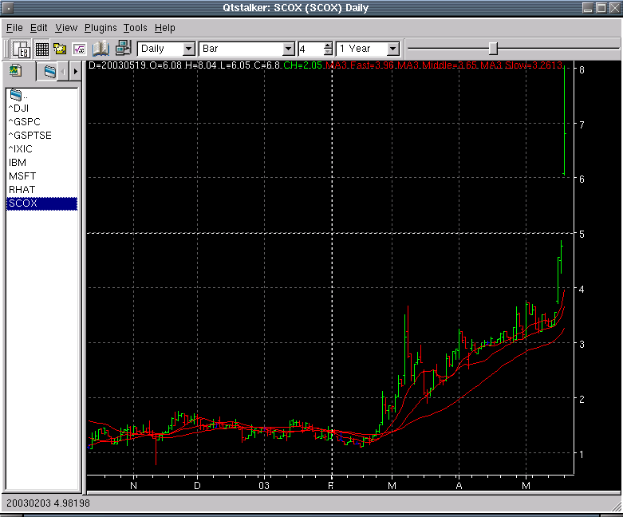

Main Chart Area
Description
The main chart area is where the OHLC plot is located. Indicators
that apply to the main chart will also be plotted here. Right clicking
with the mouse will bring up the main chart popup menu.
Main Chart Popup Menu

- Chart Prefs - Modify any settings the apply to the current chart
style eg. change color of candles on a candle chart.
- New Indicator - Display the new indicator dialog.
- Edit Indicator - Display a side menu that lists all the current
indicators. Selecting this will bring up the edit indicator dialog
where you may edit the settings of the indicator.
- Delete Indicator - Display a side menu that allows you to delete
an indicator from the chart.
- New Chart Object - Display a list of chart objects to create.
NOTE: You can only create/modify objects if you are in draw mode.

- Edit Chart Object - Display a side menu that allows you select
the chart object to edit.
- Delete Chart Object - Display a side menu that allows you to
select the chart object to delete from the chart.
- Print Chart - Brings up the print menu to print the chart
selected.
- Crosshairs - Toggle the drawing of crosshairs on the chart.
Main Chart Crosshairs
By left clicking the mouse anywhere on the main chart, a x/y pair of
intersecting lines will be drawn at the point where the mouse was
clicked. This allows you to locate specific values on the main chart.
The value will appear in the status area. The status message will be
the
x(date) and y(value) of the pointer. Here is an example:
